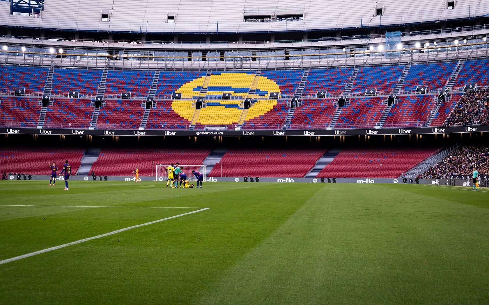

欧洲冠军联赛
1991/92 · 2005/06 · 2008/09 · 2010/11 · 2014/15


03 / CLUB HISTORY
从 1899 年的一次聚会，到跨越三个世纪的蓝红信念。
1899 年 11 月 29 日，琼·甘伯与十一位伙伴共同成立 FC Barcelona。下面按照巴萨官方“Decade by Decade”档案划分俱乐部发展阶段，保留政治环境、球场、社会身份与竞技成就四条并行脉络。
琼·甘伯成为俱乐部最早的推动者。球队在不断寻找场地、队员和稳定组织的过程中建立蓝红身份。
俱乐部拥有第一座带看台的主场，会员规模和社会影响力开始稳定增长。
萨米蒂尔、阿尔坎塔拉等早期巨星崛起，球队不断收获冠军，Les Corts 球场成为新家。
经济危机、政治冲突与西班牙内战深刻影响俱乐部，主席约瑟普·苏尼奥尔在战争中遇害。
战后环境削弱了俱乐部的文化表达，但球队和会员体系仍然维持了巴萨的社会根基。
库巴拉时代带来竞技与会员双重扩张。1957 年 9 月 24 日，诺坎普正式启用。
尽管竞技成绩相对起伏，会员数量和俱乐部的社会象征意义继续上升。
外援政策重新开放后，约翰·克鲁伊夫于 1973 年加盟，并在 1973/74 赛季帮助球队重夺西甲。
努涅斯时代扩大俱乐部规模；马拉多纳、舒斯特尔等球星先后到来，巴萨继续追求欧洲突破。
克鲁伊夫执教的梦之队完成四连冠，并在 1992 年温布利赢得队史第一座欧洲冠军杯。
百年庆典强化了“Mes que un club”的共同记忆；里杰卡尔德、罗纳尔迪尼奥与新一代拉玛西亚球员让球队重返欧洲之巅。
瓜迪奥拉的传控体系影响世界足坛，球队在 2009 年完成六冠王，并于这一阶段再赢三座欧冠。
年轻一代、拉玛西亚与焕新的诺坎普共同构成新周期；俱乐部在 125 周年后继续扩展自己的竞技与文化遗产。
完整冠军目录
以下为男足一线队巴萨官方荣誉页当前列出的主要国际、国内与加泰罗尼亚赛事冠军。赛季名称保持官方口径。
1991/92 · 2005/06 · 2008/09 · 2010/11 · 2014/15
2009/10 · 2011/12 · 2015/16
1978/79 · 1981/82 · 1988/89 · 1996/97
1957/58 · 1959/60 · 1965/66
1992/93 · 1997/98 · 2009/10 · 2011/12 · 2015/16
首冠 1928/29 · 最近冠军 2025/26
首冠 1909/10 · 最近冠军 2024/25
首冠 1983/84 · 最近冠军 2025/26
1982/83 · 1985/86
1901/02—1937/38，包含 Copa Macaya 与 Copa Barcelona
1990/91—2013/14
2014/15 · 2017/18